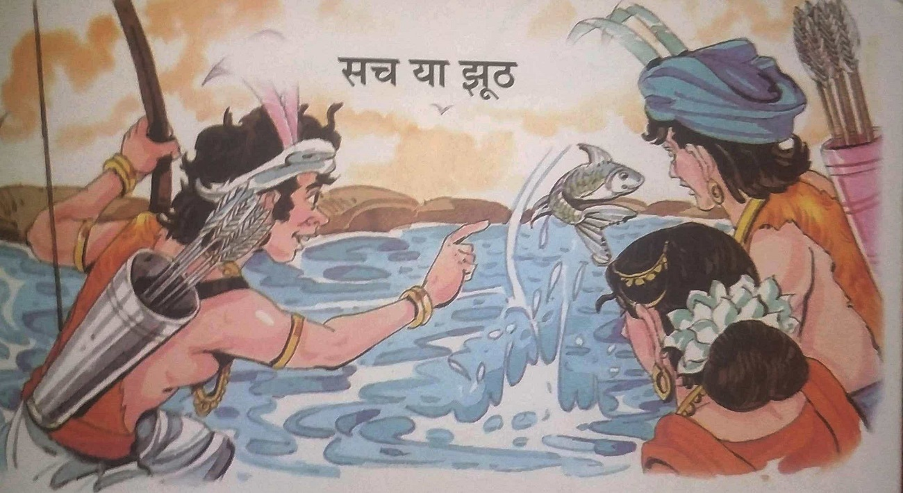

૧૦-સાચુ કે ખોટુ

મૃતદેહને પકડવા માટે રાજા વિક્રમાદિત્ય વટવૃક્ષ પાસે પહોંચ્યા. તેણે મૃતદેહને ઝાડ પરથી
ઉતારી, તેના ખભા પર મૂક્યો અને ચાલ્યો ગયો. જ્યારે વેતાલાએ તેમને વાર્તા કહેવાનું શરૂ કર્યું ત્યારે
તેઓ થોડાં પગલાં ચાલ્યા જ હતા -
એક સમયે દંડકારણ્ય જંગલમાં એક આદિવાસી કુળ રહેતું હતું. એક દિવસ એ જનજાતિના કેટલાક યુવક-યુવતીઓ ફરવા
નદી કિનારે પહોંચ્યા. નદીમાંથી એક માછલી વારંવાર કૂદી રહી હતી. બધા ધ્યાનથી એ માછલીને જોઈ રહ્યા
હતા. અચાનક એક યુવક બોલ્યો, "શું કોઈ આ માછલીને નિશાન બનાવી શકે છે?"
આ સાંભળીને કેટલાક યુવાનોએ એક અવાજે કહ્યું, "આ કાર્ય અસંભવ છે. માછલીઓ માત્ર ક્ષણભર
માટે પાણીમાંથી બહાર આવી રહી છે. આવી સ્થિતિમાં લક્ષ્ય રાખવું ખૂબ મુશ્કેલ છે." પરંતુ કેટલાકનું
માનવું હતું કે માછલીને નિશાન બનાવી શકાય છે. ચર્ચા ચાલી રહી હતી ત્યારે નીલિમા નામની યુવતીએ તેના
પ્રેમી પ્રતાપને કહ્યું, "પ્રતાપ! જો તું માછલીને મારવામાં સફળ થઈશ તો હું તારી સાથે લગ્ન કરીશ.
માત્ર પ્રતાપ જ નહીં પરંતુ કુળના અન્ય યુવકો પણ નીલિમા સાથે લગ્ન કરવા માંગે છે. નીલિમા
ખૂબ જ સુંદર હતી. નીલિમાની વાત સાંભળીને પ્રતાપે પોતાનું ધનુષ્ય ઉપાડ્યું અને માછલીને નિશાન
બનાવ્યું. પરંતુ તે પોતાનું લક્ષ્ય ચૂકી ગયો. આ જોઈને વીરબાહુ નામના બીજા યુવકે પોતાના ધનુષ પર તીર
લગાવ્યું અને માછલીને નિશાન બનાવ્યું. તીર સીધુ માછલી તરફ ગયું. તેણે નીલિમાને કહ્યું, “મેં ફિશ
શૂટિંગ સ્પર્ધા જીતી છે. હવે તારે મારી સાથે લગ્ન કરવા પડશે. ,
નીલિમાએ ગુસ્સામાં કહ્યું, “લગ્ન અને તારી સાથે ક્યારેય નહીં. કોઈપણ રીતે, મેં પ્રતાપને
લક્ષ્ય રાખવા કહ્યું હતું. મેં મારા લગ્ન માટે કોઈ સ્પર્ધાનું આયોજન કર્યું ન હતું. જાણ્યું? ,
"ના! હવે તું તારી વાત પર પાછી ફરી શકે તેમ નથી. તારે મારી સાથે લગ્ન કરવા પડશે,"
વીરબાહુએ ભારપૂર્વક કહ્યું.
તેની મિત્ર ગંગાએ પણ તેની વાતને સમર્થન આપ્યું. ગંગાએ કહ્યું, “નીલિમા! તમે તમારો શબ્દ
આપ્યો છે, તેથી તમારે વીરબાહુ સાથે લગ્ન કરવા જ જોઈએ."
પણ નીલિમાએ સ્પષ્ટ ના પાડી. ત્યારે વીરબાહુએ ગુસ્સામાં કહ્યું "તમે જુઓ કે હું તમારી
સાથે કેવી રીતે લગ્ન કરું છું. બસ તમે રાહ જુઓ." આટલું કહીને તે ચાલ્યો ગયો. બધા પાછા ફર્યા હતા. એક
દિવસ વીરબાહુ એક ઝાડ પર ચડીને મધમાખીમાંથી મધ કાઢી રહ્યા હતા ત્યારે અચાનક મધમાખીઓએ તેમના પર હુમલો
કર્યો. તે દર્દથી બૂમો પાડતો હતો અને પોતાનું સંતુલન ગુમાવી દેતો હતો અને ઝાડ પરથી નીચે પડ્યો હતો.
તે જ સમયે પ્રતાપ ત્યાંથી પસાર થઈ રહ્યો હતો. તેણે વીરબાહુને મદદ કરી. તેણે જંગલી ઘાસને પીસીને તેના
ઘા પર લગાવ્યું. પછી તેણે તેને કહ્યું, "વીરબાહુ, જો તને નીલિમા બહુ ગમતી હોય તો તું તેની સાથે લગ્ન
કરી લે. પણ પહેલાં તો એ જાણી લે કે નીલિમા પણ તને પસંદ કરે છે કે નહીં!"
થોડા દિવસો પછી એ જ યુવક અને યુવતી જંગલમાં શિકાર કરવા ગયા. તેઓ બધા આરામથી બેઠા હતા
અને માંસ ખાતા હતા ત્યારે એક વાઘ ત્યાં આવ્યો. દરેક લોકો દોડીને નજીક રહેલી ટેકરી પર ગયા. નીલિમા
પાછળ હતી. તે લપસી ગયો અને પડી ગઈ. વાઘે તેના પર તરાપ મારી.
વીરબાહુએ નીલિમાને પડતી જોઈ હતી. તે ફરીને પાછો આવ્યો. તેણે નજીકમાં પડેલો એક મોટો
પથ્થર ઉપાડ્યો અને વાઘ પર ફેંક્યો. પછી તે નીલિમાનો હાથ પકડીને દોડ્યો. વાઘ તેમની પાછળ દોડ્યો. બીજો
કોઈ રસ્તો ન જાણતા બંનેએ ટેકરી પરથી કૂદી પડયા. વાઘ પણ તેમની પાછળ કૂદી પડ્યો પરંતુ વાઘનું માથું એક
ખડક સાથે અથડાયું અને તે મૃત્યુ પામ્યો.
નીલિમા ડરના કારણે બેહોશ થઈ ગઈ હતી. તેના ડાબા હાથની કોણીમાંથી લોહી નીકળતું હતું.
વીરબાહુએ નજીકના તળાવમાંથી પાણી લાવીને નીલિમાના ચહેરા પર છાંટ્યું. વીરબાહુની મિત્ર ગંગા પહાડની
ટોચ પરથી આ બધું જોઈ રહી હતી. તેણે કહ્યું, “વીરબાહુ! આ એક સારી તક છે. નીલિમાની ડાબી કોણીમાં લોહી
વહી રહ્યું છે. પરંપરા અનુસાર જો યુવક અને યુવતીનું લોહી ભળી જાય તો તેને પતિ-પત્ની કહેવામાં આવે
છે. તમારી છરી વડે તમારા હાથ પર કટ બનાવો અને
હું જેમ કહું તેમ કરો
પ્રતાપે વિરોધ કર્યો કે વીરબાહુએ તેની સંમતિ વિના જબરદસ્તીથી નીલિમા સાથે લગ્ન કર્યા
હતા. થોડી જ વારમાં આ વિવાદ વધી ગયો અને આદિજાતિના વડા સુધી પહોંચ્યો. કુળના વડાએ નીલિમાને પૂછ્યું,
"નીલિમા! અમને ખબર પડી છે કે તમે તમારી સંમતિ વિના લગ્ન કર્યા છે. જો આ સાચું હશે તો વીરબાહુને તરત
જ મૃત્યુદંડ મળશે. તમને તમારો જીવનસાથી પસંદ કરવાનો સંપૂર્ણ અધિકાર છે."
નીલિમાએ થોડીવાર વિચાર્યું અને પછી કહ્યું, "આ લગ્ન મારી મરજી મુજબ જ થયા છે."
આ સાંભળીને બધાને નવાઈ લાગી. વીરબાહુએ આગળ વધીને કહ્યું, "હું તમને સત્ય કહું છું. હું
કબૂલ કરું છું કે હું ગંગાના શબ્દોથી પ્રભાવિત થયો હતો. મેં મારો હાથ પણ કાપી નાખ્યો, પરંતુ જ્યારે
હું નીલિમા પાસે પહોંચ્યો, ત્યારે તેનો નિર્દોષ ચહેરો જોઈને હું અટકી ગયો અને સમજાયું કે હું કંઈક
કરી રહ્યો છું. ખોટું. અમે પરણેલા નથી. મારા આ ગુના માટે હું આ જંગલ હંમેશ માટે છોડી રહ્યો છું."
|
|
વાર્તા પૂરી કર્યા પછી વેતાલાએ કહ્યું, "રાજા, નીલિમા અને વીરબાહુ
બંનેએ આટલું વિચિત્ર
વર્તન કેમ કર્યું? જો નીલિમાએ સાચું કહ્યું હોત તો તે તેના પ્રેમી સાથે તેના લગ્ન
થઈ શક્યા હોત. તે
કેમ જૂઠું બોલ્યો? અને તે પણ તે માણસ માટે જે તે નફરત કરતી હતી. શું તેનું વર્તન
વિચિત્ર ન હતું?
શું વીરબાહુએ તેમના પર કોઈ જાદુ કર્યો હતો? વીરબાહુએ નીલિમા સાથે લગ્ન કરવાના સોગંદ
લીધા હતા, તો
પછી તેણે સાચું કેમ કહ્યું, જ્યારે નીલિમાએ સ્વીકારી લીધું હતું કે તેણે વીરબાહુ
સાથે તેની ઇચ્છા
મુજબ લગ્ન કર્યા છે. મને મારા પ્રશ્નોના જવાબ આપો અથવા તમારું માથું ટુકડાઓમાં તૂટી
જશે.
રાજા વિક્રમાદિત્યએ તરત જ જવાબ આપ્યો, "નિલિમા બેભાન હતી, તેથી તે જાણતી ન હતી
કે
વાસ્તવમાં શું
થયું હતું. તે સત્યથી અજાણ હતી. તે જાણતી હતી કે જો તેણી કહેશે કે તેણીએ તેની ઇચ્છા
વિરુદ્ધ નહીં પણ
લગ્ન કર્યા છે, તો વીરબાહુ તેને તરત જ મારી નાખશે. તે કેવી રીતે તેના જીવન
બચાવનારને મોતના મુખમાં
ધકેલી શકે!વીરબાહુ નીલિમાને પ્રેમ કરતો હતો પણ તે તેની સાથે બળજબરીથી લગ્ન કરવા
માંગતો ન હતો.તેને આ
સમગ્ર ઘટના બન્યા પછી ખબર પડી હતી.તે જાણતો હતો કે જો તે જંગલમાં રહેશે તો ત્યાં
અશાંતિ થશે. તેણે
જંગલ છોડવું શ્રેષ્ઠ માન્યું. વેતાલા રાજા વિક્રમાદિત્યના જવાબથી સંમત થયા પણ રાજાએ
મૌન
તોડ્યું,પહેલાની જેમ ઉડીને તે ફરી એક વાર ઝાડ પર પડ્યો અને લટકી ગયો.
|
|